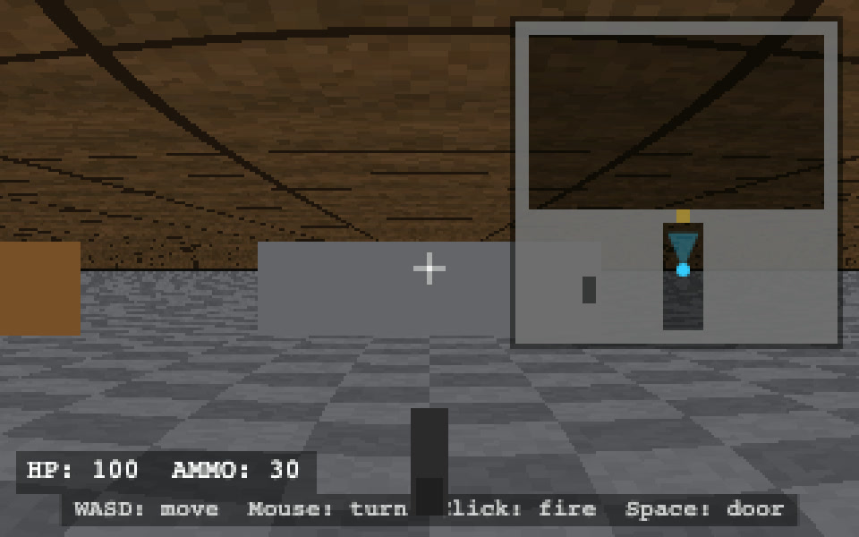

27 November 2026 · Agentic task loop · first-person raycaster
Raycaster Shooter · Ternary Bonsai 2.5 27B · Splash 1.7.3 · PQ2_0 with vision · Tenaz main + Pi · thinking off
Tenaz ended COMPLETE_WITH_GAPS after 2 h 6 min, 32 sessions and 15 task cards: 11 done and 4 left to do, all four added by the second final review. Four sessions were stopped by the watchdog, and the first final review gave no verdict. The game runs at about 54 fps in headless Chromium: the player walks and strafes, stops at walls, opens the door with Space and kills the enemy with three hits. But its picture fails the brief: the floor and ceiling are drawn over the walls, so once the door is open no wall is visible anywhere; the few walls that show are flat, untextured blocks, the map holds only brick, the fisheye correction is a 0.85 scale of the ray angle, and the opened door still cannot be walked through.

What was checked
- Runner final state COMPLETE_WITH_GAPS on 27 November 16:22:12.452 UTC. Bootstrap passed its three steps first time (22 requirements, R22 manual; 11 tasks). T001 to T009 and T011 passed verify and review on their first attempt. T010 (the screenshot script) had its first review return CHANGES, because the 'after moving forward' shot was a flat grey screen; its two builder sessions for attempt 2 were both stopped without writing a file, verify still passed, and the second review accepted the same code. Final review 1 was stopped before a verdict and retried; final review 2 asked for changes and added T012 (walls sampled at a fixed texture row, so flat), T013 (stone and wood walls; the map has only brick), T014 (the closed door looks like a wall) and T015 (a 120x120 minimap on the 320x200 frame). With maxFinalCycles 2 there was no further cycle, so the run ended with those four to do. Two replans added nothing.
- Runner events: 32 sessions, 4 stopped: 014-replan (the same bash call 5 times in a row), 025-builder-T010 (turn budget, 60 of 40 turns; Tenaz continued the work in a fresh session), 026-builder-T010 (20 turns without changing or reading anything new) and 031-final-reviewer (the same bash call 5 times in a row). The watchdog steered on repeated calls 7 times (in 014-replan, 028-replan and 031-final-reviewer) and on idle turns once (026); it also steered builders and reviewers on turn pace 12 times, once on context pace and once on context size, and three tool results passed Tenaz's 8,000-token big-output mark. 002-bootstrap and 007-reviewer-T002 each tried once to write outside the project. No reverts, context compactions, provider errors, capacity limits or engine retries. No reply stopped at the 16,384-token output limit (the largest was 5,445 tokens); the stop reasons are 912 tool use, 28 stop and 4 aborted, the aborted ones with no usage.
- Configuration: Pi 1.6.0 over RPC with the openai-completions provider splash, thinking off, text and image input, a 131,072-token context window and max_tokens 16,384; Tenaz main ed1c7ba (0.9.0 plus nine commits, built from the repository) with defaults: turnBudget 40, turnAbort 1.5, review on, 3 attempts, 90-minute sessions, temperature 0.8, generic engine, sandbox off. Launched with --allow-weak-engine; the preflight reported reasoning false and cache, tools and vision true, and its image check answered 'red blue'. A first `tenaz run` at 14:15:43 UTC exited at once because Splash was not serving; Splash was started and the second launch at 14:16:02 ran the whole run. Before that, a separate Splash process answered one 26-token request with thinking off as a check; it is not part of the run.
- Images: Pi's read tool returned the pixels of PNG files to the model 30 times in 14 sessions, 14 different files: the project's screenshots and check artifacts, a texture sheet, contact sheets and debug captures the model made of its own game. No session recorded an image refusal.
- Engine metrics: the run's Splash process wrote 946 Done summaries and 2 Cancelled lines. Summaries 1 to 6 are the preflight. The 940 proxy records with usage match summaries 7 to 948 one-to-one, in order, contiguously and uniquely by (prompt, output, cached). The 4 aborted proxy records carry no usage; two of them match the 2 Cancelled requests with 0 output. For all 32 sessions the matched summaries' fresh input, cached and output tokens equal the usage Tenaz journaled. TTFT comes from Splash's 'TTFT of request' lines. Tenaz's own engine matching recorded nothing for this engine (engine_matched 0), so these figures come from the log.
- Memory: Tenaz's 311 host samples report memory pressure level 1 (normal) in 207 and level 2 (warning) in 104, from 14:42 to 16:13, mostly during the long T005, T009 and T010 builder and reviewer sessions. Wired memory went from 16.4 GiB at the first sample to a maximum of 48.6 GiB, and free memory fell to 0.11 GiB at its lowest. Swap use stayed between 15.05 and 15.31 GiB, already 15.3 GiB before the run. Tenaz sampled Splash's Python parent (0.3 to 0.5 GiB), not its engine; one reading by the operator during the run showed the engine process at 21.4 GB, which is a single observation, not a sampled peak.
- `verify --all` on a clean clone of the final commit df56bcc with the run's node_modules: 12 of 12 passed, as Tenaz recorded. Model-written checks that test build, state, math and file presence; they did not catch that the walls are overdrawn.
- Played by Claude with Playwright in headless Chromium (--use-mock-keychain) against the run's build, with real keyboard and mouse input, at about 54 fps. Headless Chromium gives no pointer lock, so turning was tested through the game's window.__game.camera.turn. Spawn (12,18) facing the closed door; the HUD shows 'HP: 100 AMMO: 30', a text controls hint, a crosshair and the gun. W moved about 2.65 cells in 1 s and stopped at the closed door (y 15.3); strafing and walking back work, and walls stop the player.
- Door: Space opens it, and the enemy behind it starts walking toward the player, but the player still cannot walk through the opened door, even after the enemy is dead. Combat: clicks fire and lower the ammo; the enemy flashes when hit and fell on the third hit (after one miss) and stayed down. Enemies never damage the player. An enemy next to the player fills the screen red.
- Look: renderFrame draws the walls, then casts the floor and ceiling over them, so the walls are mostly overdrawn; after the door opens no wall is visible anywhere, only floor and ceiling to the horizon. The walls that do show are flat blocks, as the texture is sampled at a fixed row (texY = 0.5), and only brick exists in the map. The fisheye 'correction' multiplies the ray angle by 0.85 instead of using a cosine correction. The ceiling shows curved dark bands. The barrel and pillar are barely visible flat blocks. The minimap is a semi-transparent 120x120 box that shows a copy of the view as well as a small map.
- Public artifact: `vite build --base ./` of the final commit df56bcc in the clean clone; its JavaScript bundle is byte-identical to the run's own dist, and its index.html differs only in the script path (./assets in place of /assets). Plain canvas code; the capture fetched only from the local server, with no console errors. Screenshot: a fresh headless capture of the published build's spawn view at 960x600.
Limits of this evidence
Completion is the runner outcome. Ternary Bonsai 2.5 27B as Prism ML's PQ2_0 GGUF (7.25 GB) with its BF16 vision projector on Splash 1.7.3, with the DFlash2 draft Splash picks for Qwen 3.8 27B, thinking off, temperature 0.8, Pi 1.6.0, Tenaz main ed1c7ba: as close as possible to the Qwen 3.8 27B pi-adapted run 2 of 19 November, which finished COMPLETE in 2 h 3 min with 45 checks and a game that passed all eight Must have items. This run took about as long but made 944 requests against 439, ended with four tasks open, and built a game whose walls are overdrawn by the floor and ceiling. It decodes about twice as fast (median 105.8 against 52.0 tok/s) but its median TTFT is 1.40 s against 0.38 s, with no Neural Engine split, and memory pressure reached the warning level in a third of the samples. Model, quantization, Splash version, Pi version and Tenaz build all differ from the reference, so the result cannot be put on one cause. One run.
Configuration
The model, serving engine and agent used for this execution.
| Field | Value | Detail |
|---|---|---|
| Model · primary | Ternary Bonsai 2.5 27B · primary · reasoning none (thinking off, as in the reference run): Splash started with --reasoning-effort none and logged every request of the run's process 'effort absent → none · thinking off'; every proxy record has 0 reasoning tokens. Bonsai had not run with thinking off before. | PQ2_0 GGUF, the ternary model packed in 2 bits with rotated weights (Ternary-Bonsai-2.5-27B-PQ2_0.gguf, 7,253,354,848 bytes, sha256 103a11c94324029d8bae3f8152f30bba414730064cfb77438f8589db72e1aa85), the same file as the Bonsai Pagoda runs, passed to Splash with --model-dir. Vision projector Ternary-Bonsai-2.5-27B-mmproj-BF16.gguf from the same revision (931,145,856 bytes, sha256 e287342d92332fa3577ed1d42e921dac9370c08da58ba9337fa450f6cc76cfd7), passed with --mmproj. |
| Checkpoint · primary | prism-ml/Ternary-Bonsai-2.5-27B-GGUF:PQ2_0 | primary model artifact · revision 28a7093cc25bc151cc2b284c5570f12ce343fdcf |
| Model · drafter | Qwen 3.8 27B DFlash2 · drafter | — |
| Checkpoint · drafter | incoai/Qwen3.8-27B-DFlash2 | drafter model artifact · revision 015e795645c74b1a0eeef3b570031fb62e769bc5 |
| Runtime | Splash 1.7.3 · Homebrew formula splash 1.7.3; the engine start script wrote `splash --version` (Splash 1.7.3) before starting it · One splash serve process for the whole run, started at 14:15:54 UTC on 27 November by the run's start script (run by hand just before `tenaz run`), ready at 14:16:01 and stopped after the run; registered with Tenaz as a generic engine with start and stop scripts and reached through Tenaz's proxy. --model prism-ml/Ternary-Bonsai-2.5-27B-GGUF:PQ2_0 --model-dir <the cached PQ2_0 GGUF> --mmproj <the cached mmproj-BF16.gguf> --port 11245 --offline --no-webui --max-context 128K --reasoning-effort none --idle-release off; every other setting Splash's default: DFlash2 draft chosen automatically, --verify-rows auto, an SSD prefix cache of temporary files (up to 13.9 GiB). Startup log: 'Ready · context 128K'; 'The GPU runs the prefill FFN alone: ANE FFN split needs unrotated quantized projections', so no Neural Engine split. Temperature 0.8 pinned through Tenaz's proxy (Bonsai's own default is 1.0); top-p and top-k left to Splash. Pi's max_tokens 16,384. mode | inference engine and exact build |
| Harness | Pi coding agent over RPC driven by Tenaz main ed1c7ba (it reports 0.9.0 (ed1c7ba)) 1.6.0 | the agent or client that drove the run |
| Runner | Tenaz main · build ed1c7ba after 0.9.0 (unreleased) | open-source runner, github.com/aartiles/tenaz · how the runner evolved |
| Hardware | Apple MacBook Pro · 64 GB unified memory | hardware recorded for this execution |
| Workload | Raycaster Shooter · revision 1 | One-shot raycaster brief by @ddalcu, as posted by @Beamsters1, used verbatim as the Tenaz brief (sha256 5c3cf17c..., the same file as the other Raycaster runs); the local model wrote its own spec, verify and task plan. Per-session context budget 85,196 tokens (0.65 of 131,072). Set up as close as possible to the Qwen 3.8 27B pi-adapted run 2 of 19 November: same brief, thinking off, temperature 0.8, vision, generic engine, Tenaz defaults, sandbox off, --allow-weak-engine. Model, quantization, Splash version, Pi version and Tenaz build differ. No operator action after launch. |
| Context window | 131,072 tokens | maximum context configured for the serving runtime |
| Repetitions | 1 | executions recorded for this workload; one means an indicative result, not an estimate |
Inference measurements
Engine-side rates for this run. Each figure states its own statistic; figures from different runs are not interchangeable.
| Metric | Value | Definition |
|---|---|---|
| TTFT · median | 1.39715 s | Median engine-reported TTFT ('TTFT of request' lines, millisecond precision) across matched requests. · n=940 · 90th percentile 7.35 s, mean 2.852 s, maximum 45.1 s; 58 requests over 10 s. Includes the run's cache mix and image prefill; not a prefill rate. The GPU ran prefill alone, with no Neural Engine split. |
| Decode · per-request median | 105.75 tok/s | Median of Splash's per-request decode rate across matched requests. · n=940 · 10th percentile 69.8, 90th percentile 196.2 (linear interpolation). Median 111.7 below 16K prompt tokens (143 requests), 101.7 from 16K to 32K (347), 105.8 from 32K to 64K (395), 103.8 from 64K (55). |
| Decode · output-weighted | 99.4159 tok/s | Total output tokens divided by the sum of each request's output tokens over its decode rate. · n=940 |
| Tokens per decode cycle · drafter | 7.3932 tokens/cycle | Output-token-weighted mean of Splash's tokens per decode cycle with the DFlash2 drafter (median 6.1). · n=940 · Splash logs tokens per cycle, not drafted and accepted counts, and its /status counters were not read for this run, so this is not an acceptance percentage. |
| Host wired memory · median | 42.93 GiB | Median host wired memory across Tenaz's 30-second samples from start to end of the run. · n=311 · 16.38 GiB at the first sample, maximum 48.62 GiB. Host-wide, includes every process. |
| Swapped in during the run | 0.308 GiB | Swap-in pages summed over Tenaz's memory samples (20,213 pages of 16 KiB); host-wide swap I/O, not resident memory. · n=311 · Memory pressure level 2 (warning) in 104 of 311 samples, level 1 (normal) in the rest. Swap use flat at about 15.1 to 15.3 GiB, from before the run. |
Agent session counters
Agent-wide usage totals. These include reasoning, tool calls and waiting, and are not model decode speed.
| Metric | Value | Definition |
|---|---|---|
| Run elapsed | 126.0 min | Session 001 start after the preflight (2026-11-27T14:16:09.594Z) to COMPLETE_WITH_GAPS (2026-11-27T16:22:12.452Z); includes tools, checks and reviews. · n=1 · 2 h 6 min 2.9 s; no pauses. |
| Agent sessions | 32 sessions | All harness sessions: 3 bootstrap, 13 builder, 12 reviewer, 2 replan and 2 final reviewer. · n=1 |
| Sessions ended early | 4 sessions | Sessions with ok=false: 014-replan and 031-final-reviewer (the same bash call 5 times), 025-builder-T010 (turn budget, 60 of 40) and 026-builder-T010 (20 idle turns). · n=32 |
| Operator interventions | 0 actions | No pauses, relaunches, configuration changes or edits after the first session started. · n=1 · Before it, a first `tenaz run` exited at once because Splash was not serving yet; Splash was started and Tenaz launched again 18 s later. |
| Model responses | 944 responses | All proxy request records of this run: 912 tool use, 28 stop and 4 aborted. · n=1 · The 4 aborted records, one at the end of each stopped session, carry no usage. |
| Matched model requests | 940 requests | Proxy records with usage matched one-to-one, in order and uniquely to Splash Done summaries by (prompt, output, cached). · n=940 · Splash summaries 1 to 6 (the preflight) are excluded, as is the earlier process that answered the thinking-off check. |
| Tool calls | 1,060 calls | Sum of harness tool_calls across all 32 session records. · n=32 |
| Context compactions | 0 compactions | Compaction count across all session records. · n=32 |
| Responses stopped at the output limit | 0 responses | Proxy records that stopped at the 16,384-token output limit. · n=944 · The largest reply was 5,445 tokens. |
Context and token counters
Token totals as reported by the harness or engine. Cached and cumulative figures are not additive with fresh input.
| Metric | Value | Definition |
|---|---|---|
| Maximum prompt context | 89,243 tokens | Largest prompt across matched requests; not the configured server window. · n=940 · In 025-builder-T010. Tenaz's per-session context peak, which adds the reply, reached 89,826 tokens there, over the 85,196 budget; the session was stopped at its turn limit soon after. |
| Cumulative input | 32,437,171 tokens | Sum of total prompt tokens across matched requests, including repeatedly reused context; not unique input. · n=940 |
| Cached input | 31,369,024 tokens | Sum of prompt tokens Splash reported cached across matched requests. · n=940 |
| Fresh input | 1,068,147 tokens | Total prompt minus cached prompt tokens across matched requests. · n=940 |
| Output tokens | 381,717 tokens | Sum of output tokens across matched requests; thinking was off, so no reasoning output. · n=940 |
| of which reasoning output | 0 tokens | Reasoning tokens in the proxy records and in Pi's usage; Splash served every request with thinking off. · n=944 |
| Prompt-cache token share | 96.707 % | Cached prompt tokens divided by total prompt tokens, weighted by tokens across matched requests. · n=940 |
Recorded check counters
Counts from the checks recorded with this run.
| Metric | Value | Definition |
|---|---|---|
| Tasks completed | 11 tasks | Final task cards marked done; T012 to T015, added by the second final review, left to do. · n=15 |
| Reviews returning changes | 2 reviews | Review verdicts returning CHANGES: T010's first review and final review 2. The other 11 task reviews returned ACCEPT; final review 1 was stopped before a verdict. · n=13 |
| Project checks passing | 12 checks | Checks passing in `verify --all` on a clean clone of the final commit after the run; Tenaz recorded the same 12. · n=12 · Model-written checks, not an independent acceptance suite. |
Request records & provenance
940 numeric request records in proxy order, each matched one-to-one to a Splash Done summary by total prompt, output and cached tokens. TTFT comes from Splash's 'TTFT of request' lines and decode from its Done lines. The preflight's summaries and the 4 aborted proxy records, which carry no usage, are excluded. No prompts, images, tool results, session identifiers or local paths are included.
Run ID: 2026-11-27-ternary-bonsai-2.5-27b-pq2_0-splash-v173-tenaz-main-ed1c7ba-pi-raycaster-shooter
One execution, with checks transcribed from the retained record. A completed session is not a quality score. Measurement method · All runs